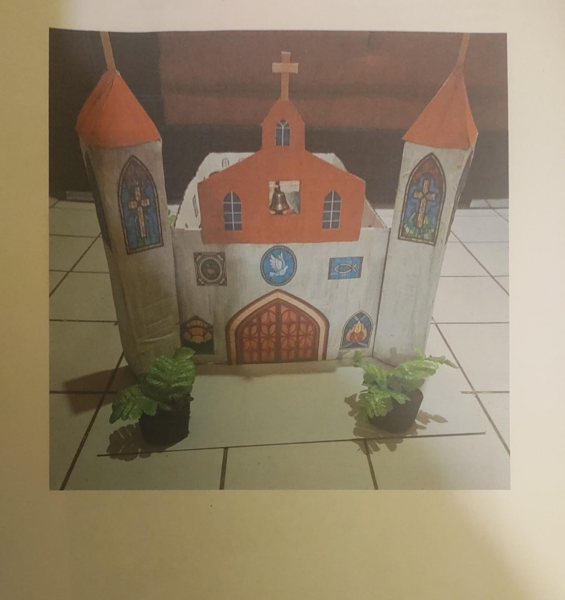

Nombre del proyecto "construcción de una iglesia"
Hoy conoceremos planiaciones para un futuro proyecto
La arquitectura de las iglesias ha evolucionado desde los primeros edificios cristianos hasta la actualidad, influenciada por innovaciones técnicas, corrientes artísticas y prácticas religiosas locales. Entre los hitos históricos destacan las grandes iglesias de Bizancio, las abadías románicas, las catedrales góticas y las basílicas renacentistas, que reflejaban poder e influencia eclesiástica. Las iglesias parroquiales, aunque más simples, muestran diversidad regional y adaptaciones tecnológicas y decorativas propias de cada lugar. En el siglo XX, materiales como acero y hormigón transformaron el diseño de los templos.
La construcción de una iglesia es fundamental para proporcionar un lugar físico sagrado de adoración, comunión y enseñanza, fortaleciendo la fe comunitaria y sirviendo como centro de apoyo social y espiritual. Además de servir al culto, estos edificios fomentan la identidad, la paz, la unidad familiar y la preservación artística y cultural dentro de la comunidad.
